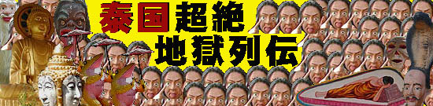

ワットソパラン
WatSopharam/Sukhothai
大仏はいいねえ〜
言葉も何も判らなくても、大仏の持つ言語での表現が不可能なニュアンスとインパクトは誰でも共有出来る、と思う。
道で写真を撮っていると過ぎ行く車やバイクの運ちゃんが「お前も好きだねえ〜」みたいな表情でニヤリ、と笑って行く。
コレほど分かりやすい宗教的モニュメントもそうそうないだろう。
ある意味仏教すら知らなくても大仏の持つ意味はかなり細かいニュアンスまで理解出来ると思う。
金、結構かかってんでしょ、みたいなトコまで。
さて、そんな事はともかく、大仏である。赤い台座に金の大仏。目出たさ120％です。
ワットサウェットから車で数十分、スコータイ県シーサムロンの町外れにあるこの大仏さんは1995年に出来た。
高さは28メートル、スコータイ様式を模した大仏さんだ。
大仏さんの背後には鉄塔が建っている。
これは夜間、大仏さんを照らすためだけにあると思われる。先端にライトが付いているだけで他に何にも使ってなさそうだし。
台座の赤いアーチの中には仏陀の生涯的なテラコッタのレリーフがある。
で、台座の中は物置きになってました。ここの大仏も胎内に入れない。こんなに大きいのに・・・
境内にはお布施たっぷり下さいね、とばかりに托鉢仏陀がズラリと並んでいたが鉢の中身は虫の死骸だけでした。
右はお墓。物凄く派手。
このようなお墓はタイのあちこちで見かけたが、人口から比べると非常に数が少ないので恐らくリッチな人しか建てられないのでしょう。
もしかしたらお坊さんの墓なのかも。
おまけ
トコロ変わってこちらはスコータイ郊外の小さな寺。
寺の名前や大仏のプロフィールは一切不明だがピッサヌロークからスコータイに向かうメインロード沿いなので結構目立つ。
大きさは精々15メートル弱といったところ。
台座の裏側が小部屋になっていて、誰もいなかったのだが何故か床屋の椅子が置いてあった。
えっ、ここ床屋！？
大仏のお膝元で髪カット。カッコよすぎるぞ。やっぱパンチパーマ？
おまけ２（というかお願い）
スコータイにいった数日後、飯屋で雑誌を見ていると（タイ語なので写真を眺めるしかない）巨大なお地蔵さんがデーンと建っている写真があった。
タイに地蔵信仰があるはずもなく、大体、そのお地蔵さん、めっちゃ日本のお地蔵さんじゃないですか。
思わず店の人に「これは何だ？！」と聞くと
「ああ、コレはスコータイの町にあるお寺だよ。うひゃひゃひゃ・・・」との事。
大きさはどう見積っても20メートルは下らない。
う〜〜〜〜〜、スコータイに行く前に知っていれば絶対行ったのにい〜〜〜〜
このスコータイの巨大地蔵について御存じの方は是非ともメール、ミー。
次は凄いっすよ〜！
泰国超絶地獄列伝
珍寺大道場 HOME